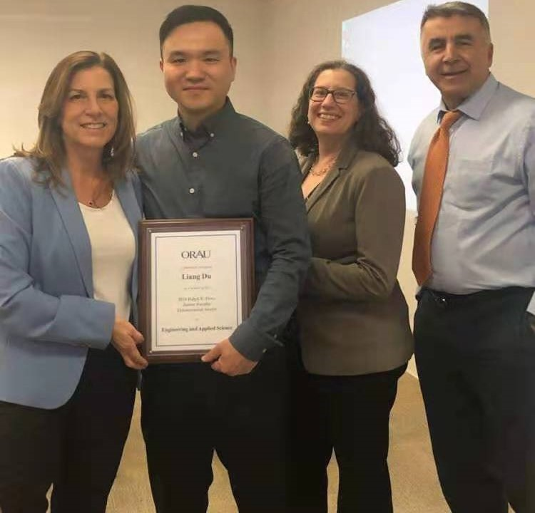

Personal Background
Academic Appointments
2019 to present, Affiliated Faculty Fellow in the Center for Sustainable Communities, College of Liberal Arts, Temple University 2017 to present, Assistant Professor, Electrical Engineering, Temple University, Philadelphia, PA
Education
Ph.D., Electrical and Computer Engineering, Georgia Institute of Technology, Atlanta, GA, December 2013 M.A.Sci., Electrical and Computer Engineering, Concordia University, Montreal, QC, December 2006 Dual B.Eng. (With Distinction), Major in Automatic Control, Minor in Computer Engineering, Huazhong University of Science and Technology, Wuhan, China, May 2003
Experience
11/2013 to 06/2017, Electrical Engineer, Schlumberger, Sugar Land, TX 05/2013 to 07/2013, Research Intern, Lighting Systems and Services Group, Philips Research North America, Briarcliff Manor, NY 05/2012 to 08/2012, Research Intern, Data Analysis Group, Mitsubishi Electric Research Lab, Cambridge, MA 06/2011 to 08/2011, Research Intern, Power System & Architecture GroupEaton Corporation Innovation Center, Milwaukee, WI
Awards
 |
Best Conference Paper on Power System Modeling & Analysis , IEEE Power & Energy Society General Meeting (PES-GM), 17-21 July 2022, Denver, Colorado Best Conference Paper on Bulk Power Generation and Transmission, IEEE Power & Energy Society General Meeting (PES-GM), 26-29 July 2021, Virtual Event
|
|
 |
Ralph E. Powe Junior Faculty Enhancement Award for "Sustainable and Affordable Deployment of High Volume of Electric Vehicles", by Oak Ridge Associated Universities (ORAU)
- One of 36 junior faculty awardees nationwide in 2018 from all disciplines across the US
- Temple's first awardee of this prestigious award in its 25 years' history
|
|